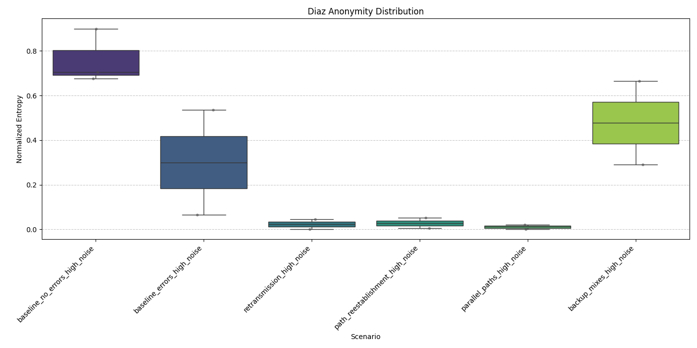
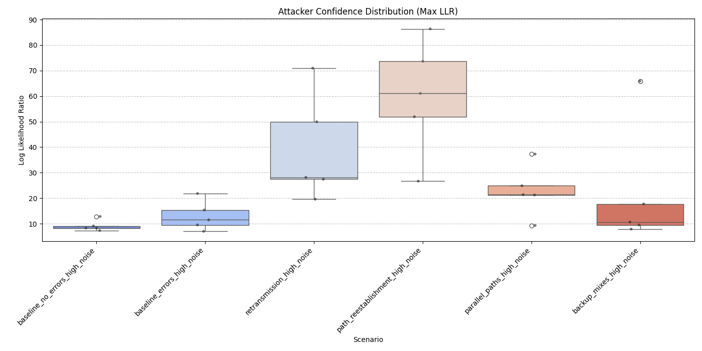
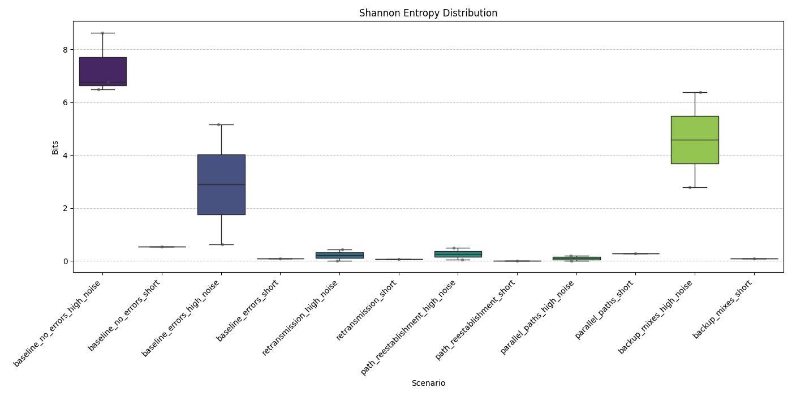
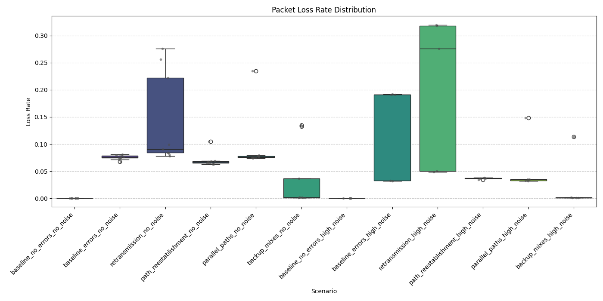
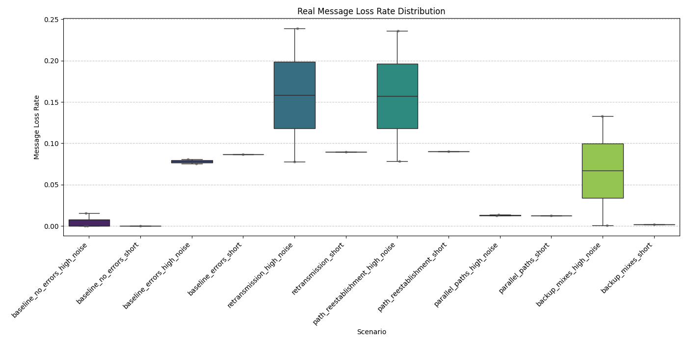
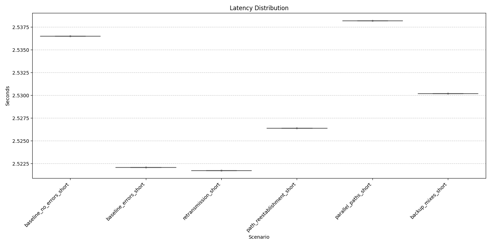

Distribution over test runs. Box shows Median & Quartiles.

Distribution of Max LLR. Dots indicate individual runs.



Percentage of messages where NO copy arrived.

| name | loss_rate | avg_latency | diaz_anonymity | shannon_entropy | attacker_confidence | attack_success | attack_success_top2 | true_recipient_rank |
|---|---|---|---|---|---|---|---|---|
| Testrun_20260130_012706_01_baseline_no_errors_high_noise | 0.00% | 2.5415 | 0.6245 | 5.995542e+00 | 7.3318 | ❌ NO | ❌ NO | - |
| Testrun_20260130_013723_02_baseline_errors_high_noise | 19.20% | 2.5404 | 0.6058 | 5.829288e+00 | 7.0265 | ❌ NO | ❌ NO | - |
| Testrun_20260130_014739_03_retransmission_high_noise | 27.60% | 2.5399 | 0.0143 | 1.376254e-01 | 19.6126 | ❌ NO | ✅ YES | #2 |
| Testrun_20260130_015756_04_path_reestablishment_high_noise | 3.65% | 2.5558 | 0.0000 | 7.586747e-05 | 51.9351 | ❌ NO | ✅ YES | #2 |
| Testrun_20260130_020813_05_parallel_paths_high_noise | 3.53% | 2.5402 | 0.0050 | 4.814838e-02 | 21.2652 | ❌ NO | ❌ NO | #4 |
| Testrun_20260130_021830_06_backup_mixes_high_noise | 11.35% | 2.5331 | 0.1171 | 1.124595e+00 | 65.9139 | ❌ NO | ❌ NO | - |
| Testrun_20260130_022847_01_baseline_no_errors_high_noise | 0.00% | 2.5309 | 0.3713 | 3.573643e+00 | 9.1182 | ❌ NO | ❌ NO | - |
| Testrun_20260130_023904_02_baseline_errors_high_noise | 19.13% | 2.5178 | 0.2471 | 2.366578e+00 | 9.5394 | ❌ NO | ❌ NO | - |
| Testrun_20260130_024921_03_retransmission_high_noise | 31.77% | 2.5359 | 0.0000 | 4.988118e-09 | 49.9542 | ❌ NO | ❌ NO | - |
| Testrun_20260130_025938_04_path_reestablishment_high_noise | 3.42% | 2.5576 | 0.0000 | 6.283486e-06 | 73.6377 | ✅ YES | ❌ NO | #1 |
| Testrun_20260130_030955_05_parallel_paths_high_noise | 3.31% | 2.5397 | 0.0000 | 5.523774e-08 | 37.2974 | ❌ NO | ❌ NO | #5 |
| Testrun_20260130_032012_06_backup_mixes_high_noise | 0.12% | 2.5534 | 0.0221 | 2.118529e-01 | 17.7790 | ❌ NO | ❌ NO | - |
| Testrun_20260130_033029_01_baseline_no_errors_high_noise | 0.00% | 2.5285 | 0.4484 | 4.315539e+00 | 8.3170 | ❌ NO | ❌ NO | - |
| Testrun_20260130_034046_02_baseline_errors_high_noise | 3.28% | 2.5483 | 0.0758 | 7.294904e-01 | 15.3638 | ❌ NO | ❌ NO | #10 |
| Testrun_20260130_035103_03_retransmission_high_noise | 4.90% | 2.5495 | 0.0401 | 3.863806e-01 | 28.1712 | ❌ NO | ❌ NO | - |
| Testrun_20260130_040120_04_path_reestablishment_high_noise | 3.69% | 2.5480 | 0.1051 | 1.011456e+00 | 26.6852 | ❌ NO | ✅ YES | #2 |
| Testrun_20260130_041137_05_parallel_paths_high_noise | 14.82% | 2.5211 | 0.3303 | 3.170655e+00 | 9.3306 | ❌ NO | ❌ NO | - |
| Testrun_20260130_042153_06_backup_mixes_high_noise | 0.16% | 2.5375 | 0.3505 | 3.364717e+00 | 9.5366 | ❌ NO | ❌ NO | - |
| Testrun_20260130_043210_01_baseline_no_errors_high_noise | 0.00% | 2.5370 | 0.1300 | 1.251041e+00 | 12.8422 | ❌ NO | ❌ NO | - |
| Testrun_20260130_044227_02_baseline_errors_high_noise | 19.10% | 2.5501 | 0.1442 | 1.387321e+00 | 11.5197 | ❌ NO | ❌ NO | - |
| Testrun_20260130_045244_03_retransmission_high_noise | 5.04% | 2.5396 | 0.0000 | 6.294786e-06 | 70.9666 | ❌ NO | ❌ NO | #5 |
| Testrun_20260130_050301_04_path_reestablishment_high_noise | 3.87% | 2.5554 | 0.0000 | 6.153351e-05 | 86.3648 | ❌ NO | ❌ NO | #3 |
| Testrun_20260130_051318_05_parallel_paths_high_noise | 3.51% | 2.5389 | 0.1293 | 1.241362e+00 | 24.8868 | ❌ NO | ❌ NO | - |
| Testrun_20260130_052335_06_backup_mixes_high_noise | 0.10% | 2.5422 | 0.2396 | 2.307187e+00 | 10.6665 | ❌ NO | ❌ NO | - |
| Testrun_20260130_053352_01_baseline_no_errors_high_noise | 0.00% | 2.5389 | 0.4952 | 4.753553e+00 | 8.3489 | ❌ NO | ❌ NO | - |
| Testrun_20260130_054409_02_baseline_errors_high_noise | 3.23% | 2.5402 | 0.0001 | 1.072080e-03 | 21.8541 | ❌ NO | ❌ NO | - |
| Testrun_20260130_055426_03_retransmission_high_noise | 31.99% | 2.5519 | 0.0047 | 4.508421e-02 | 27.4346 | ❌ NO | ❌ NO | - |
| Testrun_20260130_060443_04_path_reestablishment_high_noise | 3.75% | 2.5432 | 0.0000 | 2.389500e-09 | 61.0824 | ✅ YES | ✅ YES | #1 |
| Testrun_20260130_061500_05_parallel_paths_high_noise | 3.17% | 2.5328 | 0.0305 | 2.923938e-01 | 21.4012 | ❌ NO | ❌ NO | - |
| Testrun_20260130_062516_06_backup_mixes_high_noise | 0.10% | 2.5404 | 0.5374 | 5.173033e+00 | 7.9013 | ❌ NO | ❌ NO | - |
Raw Data (All Runs): Download raw_metrics.csv
Aggregated Stats (Mean/Median for Plots): Download aggregated_stats.csv